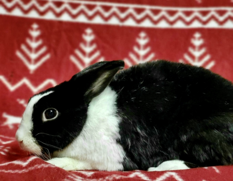

Breed: Dutch
Sex: Female
Age: 8 Years, 11 Months
Weight: 3.9 Pounds

Hi, my name is Carlotta! I have severe acquired dental disease which requires periodic tooth trims and
extractions. I have no molars on the right side of my mouth. I also have a lung abscess and limited lung space for
air. You can see in the pic the black space is the only place I have to breathe.
Despite my medical
conditions I am a super sweet and friendly girl :) I LOVE my pellets, I am super food motivated. I also love to
binky! It's my second favorite thing! So I need regular run around time with new things to sniff, chin, and
explore. I’m a huge cuddle and love to snuggle!
To support me, or any of the sanctuary rabbits at the IHRS, please Donate to our GoFundMe if you are able.